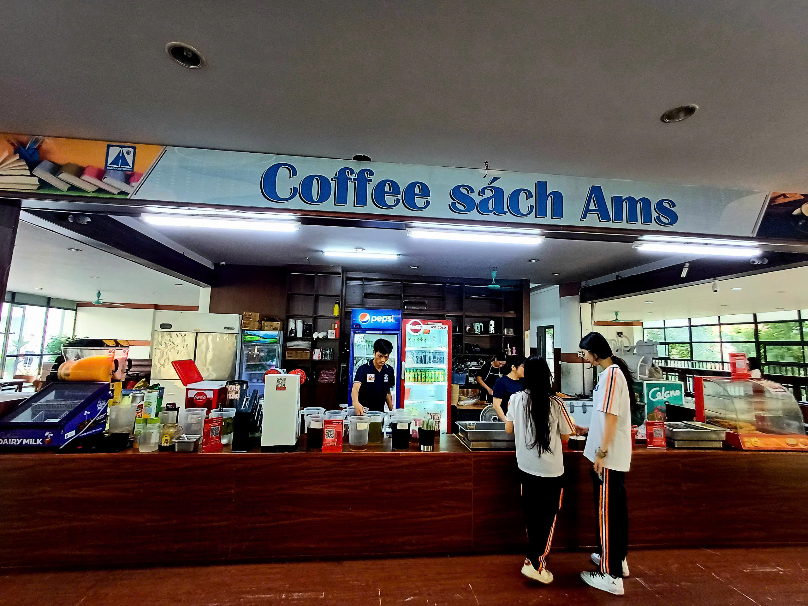
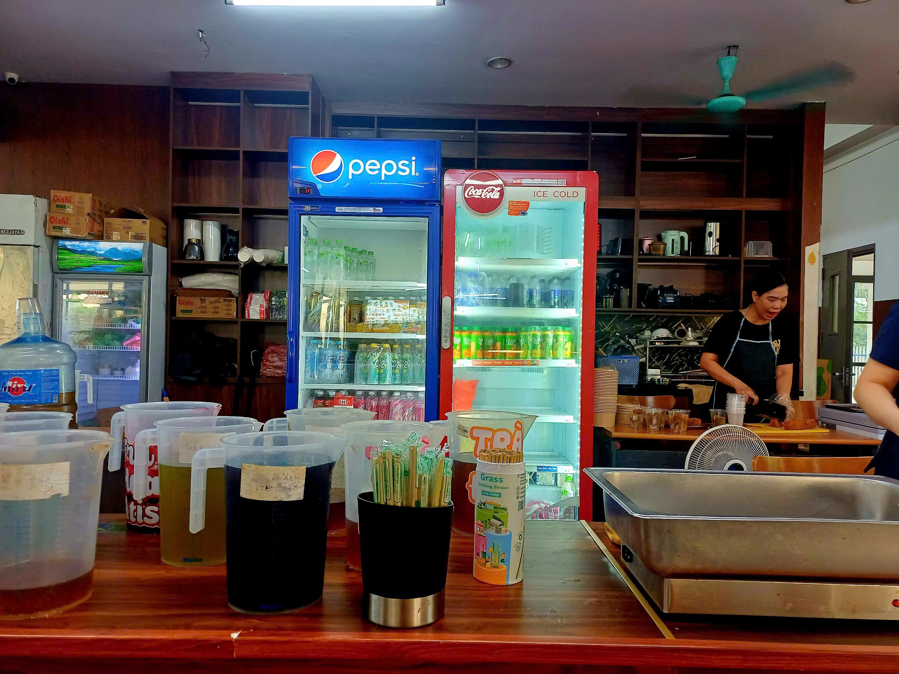
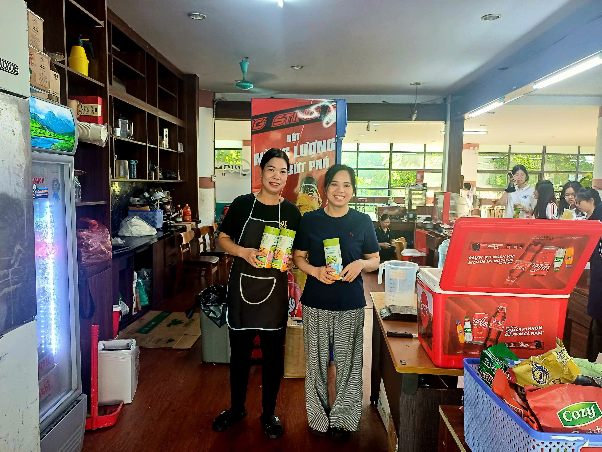
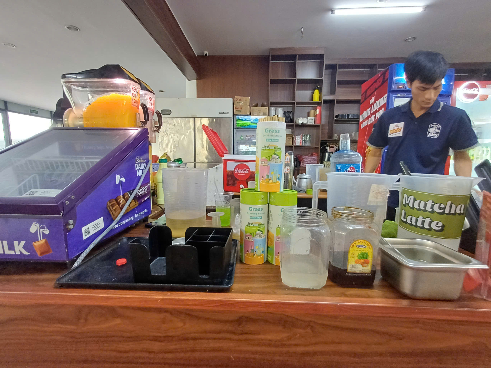
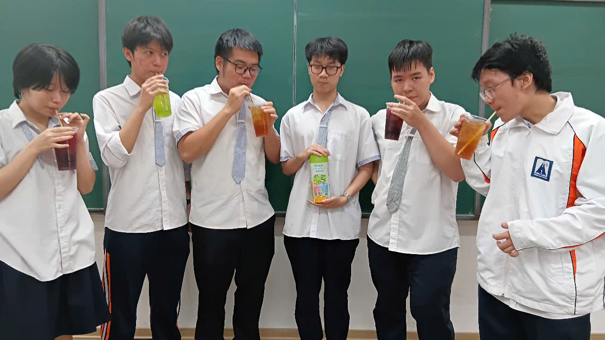
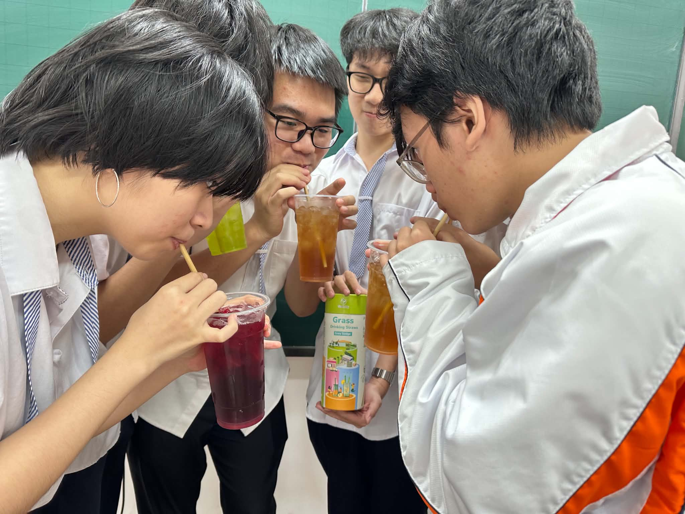
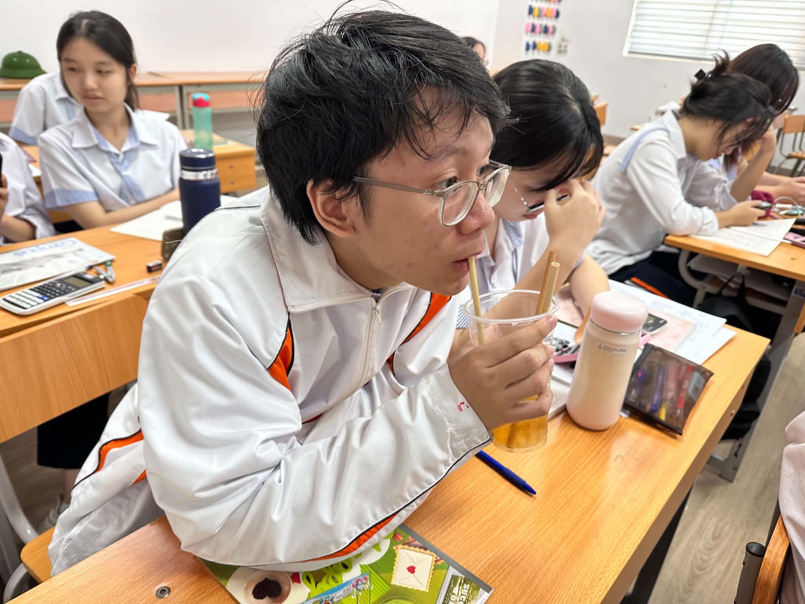
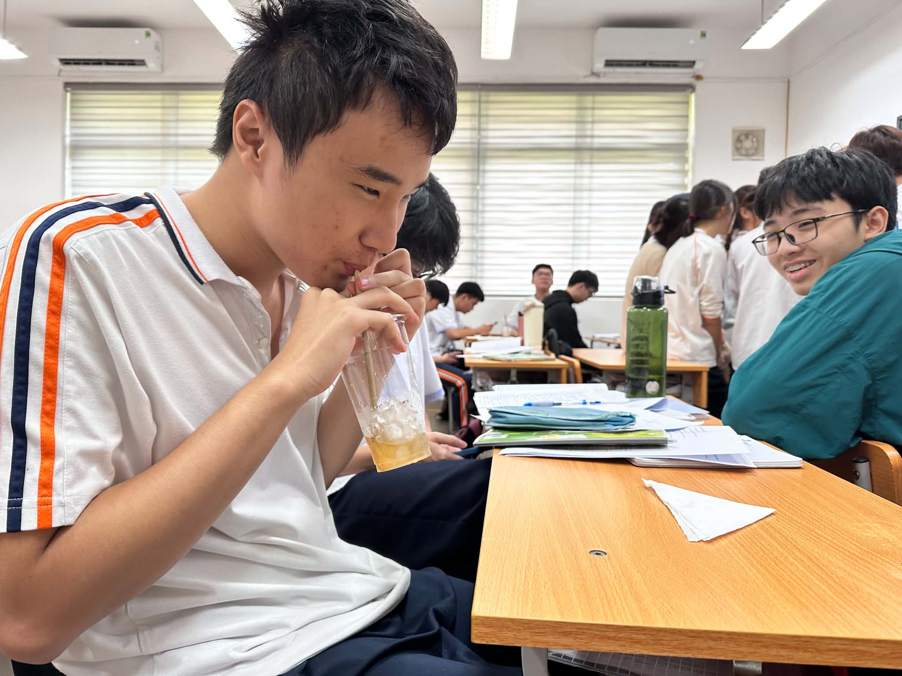
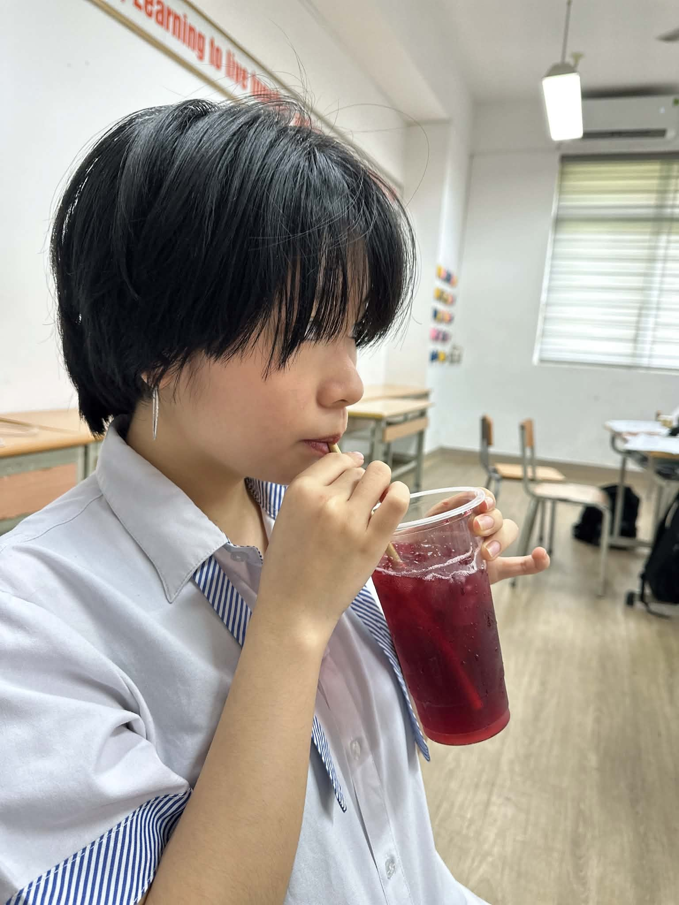

- Lê Nguyễn Anh Thư - Class of 2027
- Ingrassed - my personal project to promote grass straws, a green alternative to reduce plastic waste in Hanoi, Vietnam
- From Hanoi Amsterdam High School for the Gifted
- Phone number : (+84) 0936391212
I’ve always felt a deep sense of connection with nature
Before we had cities, concrete roads, and machinery infused in our lives, we were already part of nature.
“Our bodies and souls cycle along with her. Birth, life, and death. Ingestion, digestion, excretion. Light and dark. Tranquility and turmoil. Inhaling and exhaling. Receiving and giving”.
Indeed, human lives are inherently ingrained in nature.
That is where INGRASSED began. Inspired by the word “ingrained” and rooted in grass, something so simple yet fundamental, Ingrassed is my way of rethinking one of the most everyday items that wields so much influence on the environment: the straw. As a common type of single-use plastic and then thrown away, straws are one of the culprits of plastic pollution. But there is a solution to everything, isn’t there?
And Nature is the key. By switching to a biodegradable alternative such as grass, we hope to not only tackle plastic pollution that has been prevalent in Hanoi and Vietnam for decades, but also bring a little more of nature back into our life of hustle bustle.
FROM F&B TO SCHOOL CAFETERIA
One of my project’s proudest achievements is having contributed to a positive change in my beloved high school, even if that transformation began with something as small as grass straws.
After a trial period using Green Joy grass straws introduced through Ingrassed, the Cafe Book cafeteria at Hanoi - Amsterdam High School for the Gifted, or the most popular student hangout on campus, received enthusiastic feedback, and gradually they came to recognize the immense benefits these straws offer for both the environment as well as an individual’s health. As a result, grass straws are now officially in use at Cafe Book!
The students were a little surprised to witness the shift at first, but as I interview them now, they enjoy grass straws significantly more than the plastic ones. Even more than other green alternative options.
“They’re really durable, way more than paper straws. I did bite through them the first time I used such straws, but we can all control that habit.” - One student shared.
“I like that grass straws don’t leave a strong aftertaste like bamboo straws, another eco-friendly alternative I’ve used a lot. Instead, they enhance the refreshing, subtle quality of the drink.” - Another expressed their opinion.
“For the past years, we’ve only been utilizing plastic straws because our budget couldn’t afford any further. I admit, sometimes sipping the drinks myself, I’m put off by the “taste of plastic”. Not that they give off this hose-like, rubbery note; we only stock high-quality ones. But because of that exact neutral taste, they feel a little bit “weird” and artificial. You know what they often say? “If nature doesn’t make it, don’t use it.” All the accumulated concerns we once felt when using plastic ones seemed to vanish with the arrival of grass straws. Our cafeteria is so delighted to have Anh Thu introduce this green alternative that is both reasonably priced while also providing a positive experience for any user.” - Mrs. Mai, the manager of Cafe Book, concluded sincerely.
This has been a successful approach that reaffirms my belief since I first took environmental initiatives as a middle school student: Change begins within one’s own community. Before aspiring to transform society, I want to improve my surroundings first, including my beloved school I’ve been with for 7 years. It might seem modest, but I believe with every pioneering school, such as Hanoi - Amsterdam, setting an example by shift towards green consumption, the day will soon come when all of this becomes the norm.








